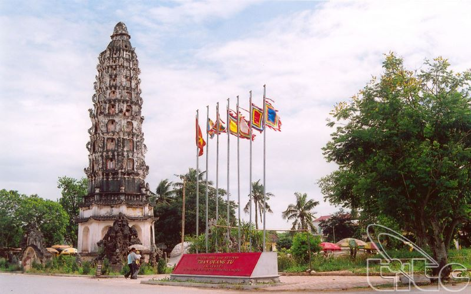
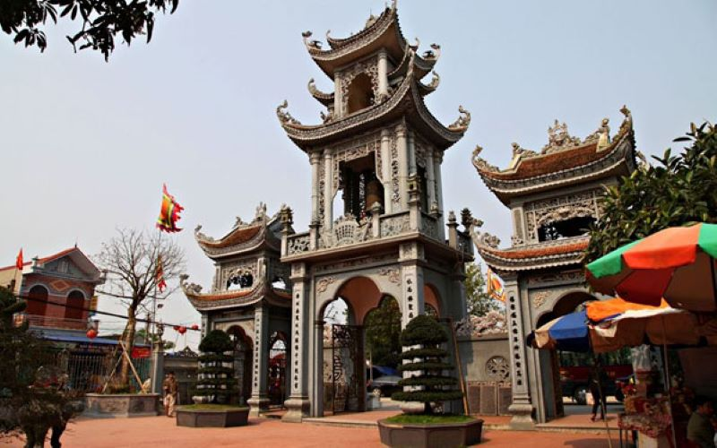

Đền Trần: Triều đại nhà Trần tồn tại 175 năm (1225 - 1400), đã để lại cho dân tộc ta những thành tựu to lớn về nhiều lĩnh vực: chính trị, tư tưởng, kinh tế, văn hóa, quân sự… Đền Trần là cụm di tích tiêu biểu trong hệ thống di tích thời Trần ở Nam Định nói riêng và cả nước nói chung.Hàng năm, tại đây diễn ra một số lễ hội, với nhiều hình thức sinh hoạt văn hoá dân gian đặc sắc, mang ý nghĩa ghi nhớ và tôn vinh thời đại nhà Trần.
Chùa Cổ Lễ: Là ngôi chùa ra đời từ khá lâu với nét kiến trúc cổ kính hoang sơ. Chùa còn có tên gọi khác là Giang Thần tự. Nơi đây, vào ngày 13 đến ngày 16 tháng 9 âm lịch hàng năm tổ chức rất nhiều hoạt động cho du khách thập phương và người dân địa phương tới tham quan và cùng thưởng thức.Lễ hội chùa Cổ Lễ hàng năm được tổ chức nhằm suy tôn Thiền sư, Pháp sư Nguyễn Minh Không- tổ sư của nghề đúc đồng.
Phủ Dày: Người Việt có câu “Tháng Tám giỗ Cha, tháng Ba giỗ Mẹ”, ý muốn nói đến tục giỗ Mẹ vào tháng Ba Âm lịch để tưởng nhớ công đức của Thánh Mẫu Liễu Hạnh. Ở Việt Nam, tục thờ Mẫu có ở nhiều nơi, nhưng Phủ Dầy được xem là cái nôi của loại hình tín ngưỡng độc đáo thuần Việt này. Lễ hội Phủ Dày được tổ chức từ 3 – 8/3 Âm lịch hàng năm là dịp để du khách có dịp tìm hiểu, tri ân công đức Thánh Mẫu Liễu Hạnh.
